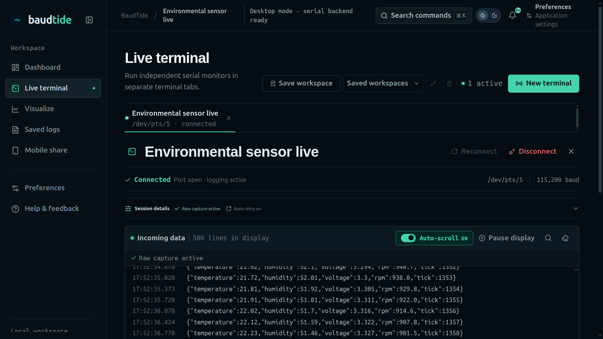
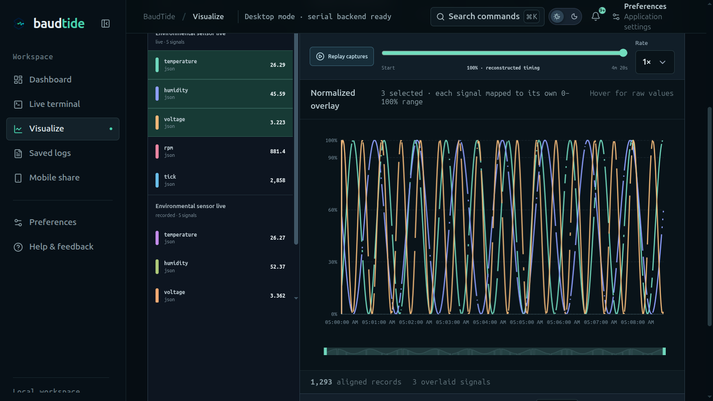

Start with a board, not a configuration maze.
Discover serial ports automatically or enter a path manually, then keep multiple devices open in tabs or side-by-side views.
Auto-discovery / manual paths / session tabs
BaudTide is AspidIoT's open-source Linux serial monitor for ESP32, Arduino, and USB/TTY devices—built to make embedded development calmer, more observable, and easier to share.

Open-source ambition
BaudTide is our contribution to the greater IoT community: a public, inspectable workspace for the everyday work between a board, a serial line, and the engineer trying to understand what just happened.
Let the roadmap, issues, and implementation stay visible to the people building with connected hardware.
Capture raw device output on the machine where the work is happening, with exports when the team needs them.
Give embedded developers a focused starting point for testing, observing, and extending the serial workflow.
What ships inside
From the first port discovery to the final exported log, BaudTide keeps embedded debugging readable and close to the device.
Discover serial ports automatically or enter a path manually, then keep multiple devices open in tabs or side-by-side views.
Auto-discovery / manual paths / session tabs
Detect structured values from live output, visualize the fields that matter, and send text or raw hexadecimal with per-device line endings.
Live parsing / selected fields / text + hex
Pause or filter the display while capture continues, then browse, search, preview, export, or delete local logs and saved layouts.
Non-destructive capture / local logs / saved workspaces
Open a focused, read-only mobile view over the local network, with QR links and explicit opt-in before any remote control is exposed.
Local network / read-only by default / opt-in control
Product proof / interface tour
These screens are captured from BaudTide's own interface preview, so the promise stays tied to the product people can actually open, inspect, and extend.

Reconnect, pause, clear, and filter per session while the rest of the bench stays in view.
Mobile companion
Read-only session · local network
Share a focused, read-only view with a phone on the local network without handing over the desktop workspace.

Inspect numeric telemetry beside the terminal so changing device values are easier to understand in context.
Built for the real bench
BaudTide pairs a Tauri v2 desktop shell with a React + TypeScript interface and Rust-backed Linux serial access—so the UI stays calm while the device work stays real.
AspidIoT / open-source ambitions
The repository is the front door: read the code, try the workflow, report what your hardware needs, and help make IoT tooling more open by default.